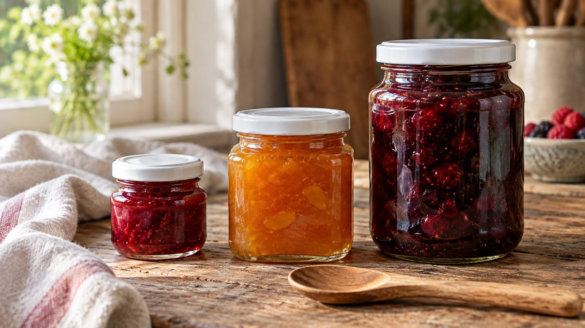

Como escolher o tamanho do pote de vidro pelo que você vai vender

Muita gente escolhe o pote pelo que achou bonito na foto e só depois descobre que ele é pesado demais pro frete, grande demais pra uma lembrança ou pequeno demais pro que queria vender. O caminho mais seguro é inverter a ordem: primeiro você pensa no que vai vender e pra quem, depois escolhe o tamanho.
Três perguntas antes de escolher
1. Quanto o cliente consome de uma vez? Uma porção pra provar, um presente e um pote pra ter em casa pedem tamanhos diferentes. Pote grande pra um produto que o cliente ainda não conhece é um compromisso maior pra ele.
2. Como o produto chega até o cliente? O vidro pesa. Em venda online, o peso do pote vazio entra na conta do frete, e o tamanho define quantos cabem numa caixa. Pra entender o transporte, vale ler como embalar pote de vidro com mel pra não vazar.
3. Onde o produto vai ficar exposto? Na prateleira de um empório, na vitrine de uma feira ou numa foto de Instagram, o tamanho muda a presença do pote.
Os tamanhos, em medidas reais
Estas são as medidas oficiais de alguns potes do catálogo da PodEmbalar. O peso é o informado no catálogo para o pote vazio.
| Pote | Capacidade | Dimensões | Peso do pote vazio |
|---|---|---|---|
| Geleinha 40 ml | 40 ml | ø 42,5 x 50 mm | 50 g |
| Geleinha Sextavado 40 ml | 40 ml | 46 x 54 mm | 56 g |
| Geleinha Quadrado Mini 50 ml | 50 ml | 45 x 55 mm | 59 g |
| Quadrado 200 ml | 200 ml | 65 x 85 mm | 148 g |
| Pianezza Alto 220 ml | 220 ml | ø 70 x 95 mm | 218 g |
| Conserva 350 ml | 350 ml | ø 75 x 110 mm | 218 g |
| Conserva 500 ml | 500 ml | ø 80 x 130 mm | 260 g |
A capacidade é a nominal do pote. O quanto de produto cabe de verdade depende de quanto espaço livre você deixa sob a tampa.
O que cada faixa costuma resolver
De 40 a 50 ml. Mini potes aparecem na oferta de vários fornecedores de embalagem pra geleia, doce e lembrancinha. É o tamanho de provar, de presentear e de montar kit. Se a ideia é lembrança de festa, a leitura de como montar lembrancinha de geleia com pote de 40 ml mostra o passo a passo.
Em torno de 200 ml. É uma faixa muito usada na oferta de potes pra geleia, mel e doces. Pesa mais de 140 g vazio, o que já aparece no frete.
De 350 a 500 ml. Mais produto por unidade, e mais peso pra despachar: o de 500 ml pesa 260 g vazio. Faz sentido quando o cliente compra pra consumir em casa e você quer reduzir a quantidade de potes por pedido.
Dá pra começar com pouco
Você não precisa acertar de primeira. Uma forma prática de decidir é comprar poucos potes de dois tamanhos, vender os dois e ver qual o cliente escolhe mais. Com o resultado na mão, o segundo pedido já sai mais certeiro, e o tamanho que não girou não vira estoque parado.
Precisa de uma capacidade que não está na lista? Veja o catálogo completo ou fale com a gente pelo WhatsApp.